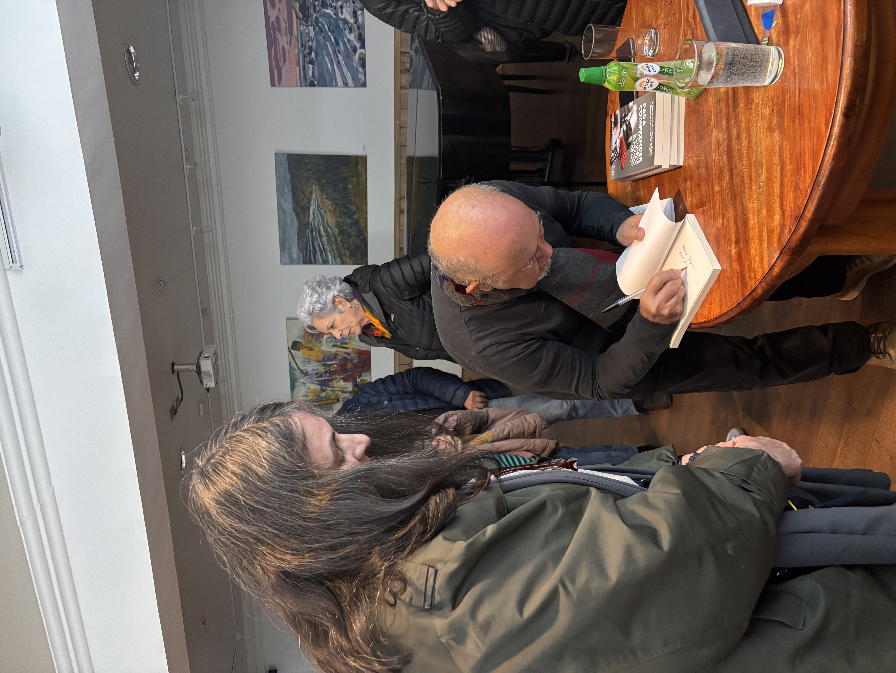
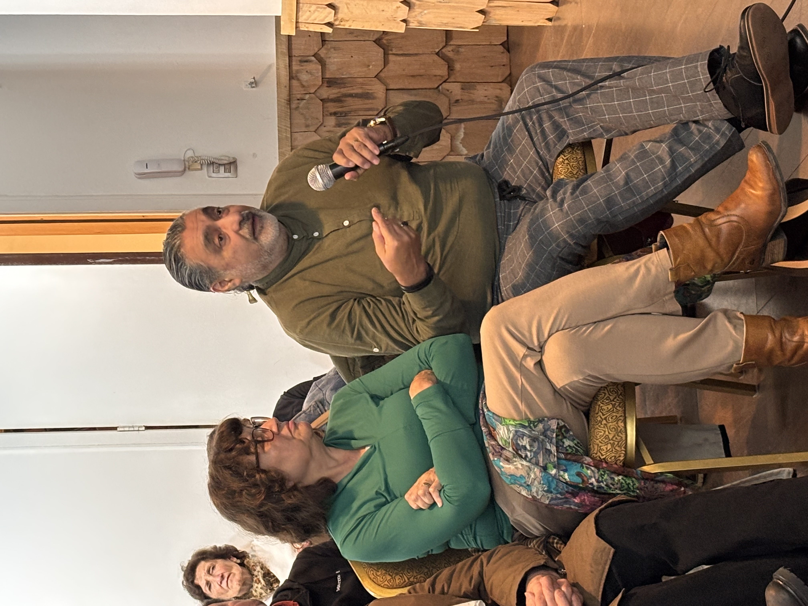
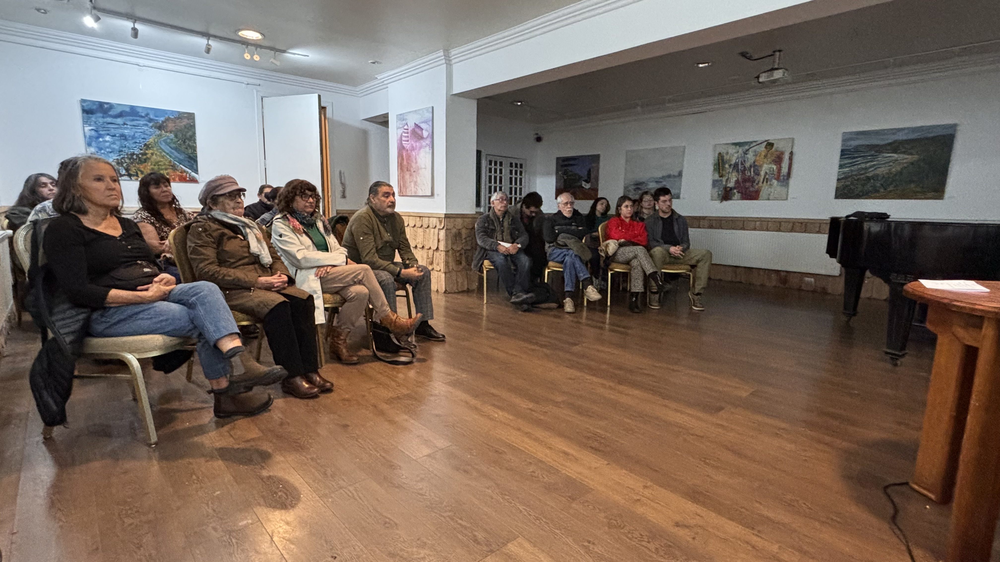
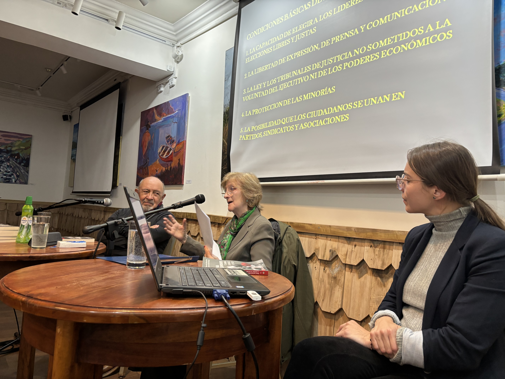
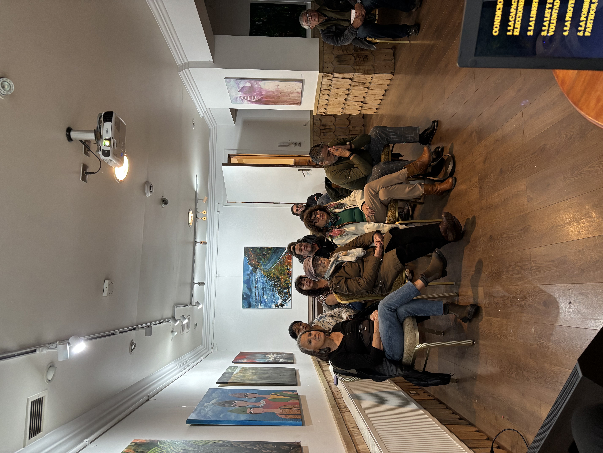

Un ciclo de encuentros dedicado a promover la lectura, la reflexión, el aprendizaje y el bienestar integral.
El Ciclo de Charlas de Fomento del Libro y la Lectura es una iniciativa desarrollada en conjunto con el Hotel Museo El Greco en la ciudad de Puerto Varas, orientado a promover la lectura, la reflexión y el aprendizaje a través del encuentro y la conversación.
Los encuentros buscan generar espacios de participación, intercambio y acercamiento a los libros y la lectura, contribuyendo también al bienestar integral de quienes participan en estas actividades.




